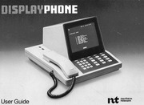

Northern Telecom Displayphone
A telephone and a computer terminal that were the same desk object

Overview
The Northern Telecom Displayphone was an integrated business telephone and data terminal — a single desk object that was simultaneously a two-line POTS phone and a CRT terminal. It was developed by Bell-Northern Research (BNR) in Ottawa, manufactured by Northern Telecom, and marketed by the Computer Communications Group of Bell Canada, which registered 'Displayphone' as a trademark for 'the integrated voice and data terminal.' The first model, the NT6K00, carried a 7-inch monochrome CRT, a retractable QWERTY keyboard stored in the base, a 300 bps modem, a speakerphone, and two phone-line keys. A 1984 Government of Canada report on the communications equipment industry called it 'the first on the market to integrate voice and data.'
Its defining interaction is the marriage of two desks. You dial by pressing keys and watch the number echo in the corner of the CRT; five soft keys change function with on-screen labels (NEXT, PREV, INDEX, CHANGE for paging a 90-number directory; KEEP, RECALL for a call worklist); then the keyboard folds down from under the phone and the same object becomes a data terminal, dialing into remote databases with its built-in modem while the other line carries a voice call. The June 1981 User Guide sums it up: 'talk to someone while accessing a data base and viewing information on the CRT display.' It was, per the same guide, 'self-instructing through its visual prompts and changing soft keys that lead the user from one operation to another.'
Deep dive
The Displayphone is the purest 'phone as terminal' object of the era: dialing is typing, numbers echo on the CRT, and the keyset includes five soft keys whose functions are re-labeled on the display. The 90-number directory is paged with NEXT/PREV/INDEX/CHANGE soft keys; the # key provides on-screen last-number redial; a clock, call timer and reminder service turn the phone into a small desktop appliance.
Two line keys let a user hold a voice call on one line while running a data session on the other with the built-in 300 bps modem — simultaneous voice-plus-data on a single desk phone in the era when a modem still meant an acoustic coupler and a telephone handset pushed into rubber cups. The data side predates the computer-and-modem-as-separate-boxes pattern that became normal later in the decade.
The retractable QWERTY keyboard stored in the base is the hinge between the two personas: flip it down and the telephone becomes a terminal, with the CRT showing both keystrokes and the remote's responses. One object, two interaction regimes, no separate box.
The Displayphone was positioned as an executive workstation, sold through Bell Canada's Computer Communications Group. The line did not conquer the market — the desktop PC absorbed the terminal role — but the pattern it set (screen on the phone, changing soft labels, integrated voice and data) became the standard for digital desk phones and, eventually, unified communications. A preserved NT6K80 (December 1985) lives at The Centre for Computing History in Cambridge, UK.
Team & pioneers
- Bell-Northern Research (BNR). The Ottawa lab that developed the Displayphone.
- Northern Telecom. Manufacturer of the Displayphone (NT6K00, then NT6K80).
- Bell Canada Computer Communications Group. Marketed the Displayphone; registered the Displayphone trademark.
- William McDowell. Donor of the preserved NT6K80 unit at The Centre for Computing History.
Media
